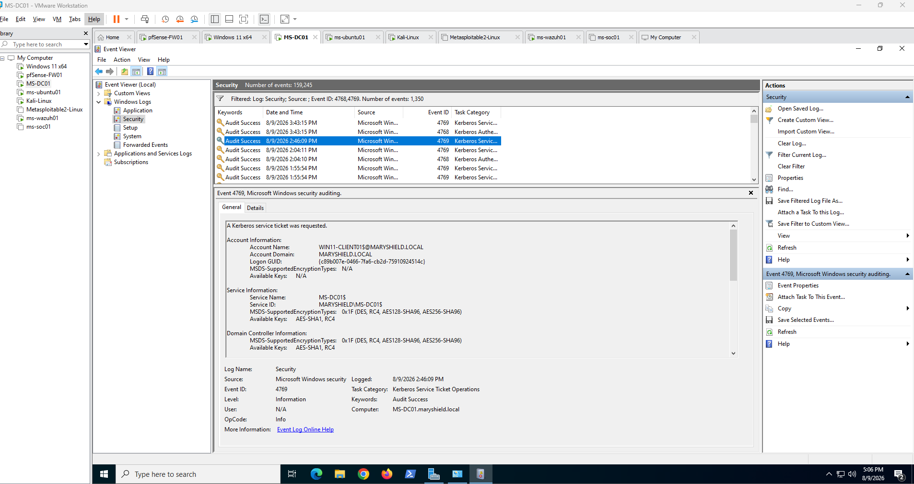
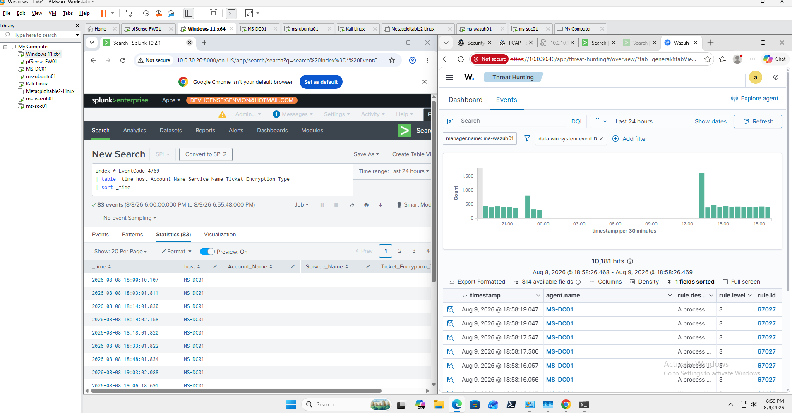
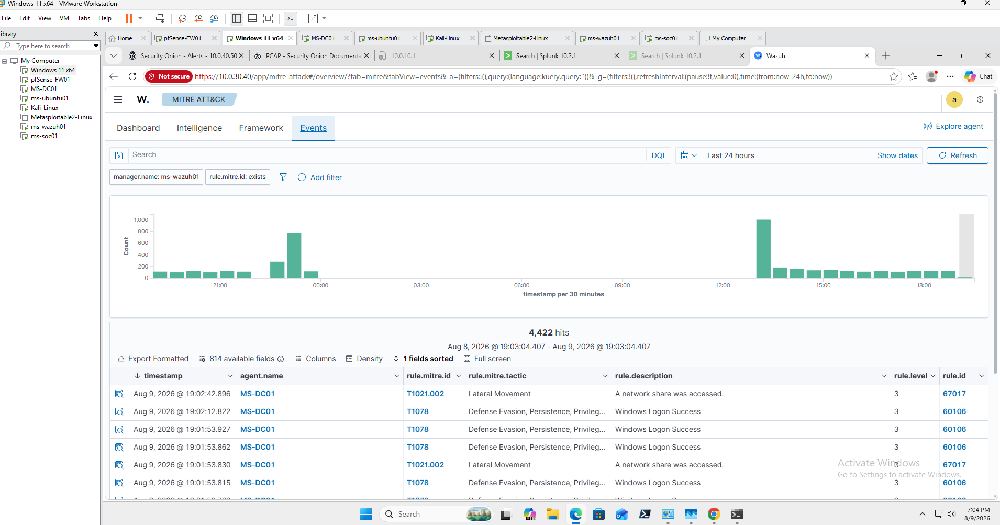

Executive Summary
This write-up documents a controlled Kerberoasting detection exercise conducted within the MaryShield Cyber Lab. The investigation focused on identifying suspicious Kerberos service-ticket activity and correlating evidence across Windows Security Events, Splunk Enterprise, Wazuh XDR, and Security Onion.
Windows Security Event ID 4769 was used as a primary evidence source for identifying Kerberos service-ticket requests and supporting the investigation.
Scenario
A controlled Kerberos security exercise was performed within the isolated lab to generate realistic authentication telemetry for detection and investigation.
The objective was to validate whether suspicious service-ticket behavior could be identified, correlated, investigated, and documented using the deployed SOC monitoring platforms.
Environment
| System | Role |
|---|---|
| MS-DC01 | Active Directory Domain Controller |
| WIN11-CLIENT01 | Domain-joined endpoint |
| Splunk Enterprise | SIEM and event correlation |
| Wazuh XDR | Endpoint monitoring |
| Security Onion | Network monitoring |
Detection
The investigation focused on Kerberos service-ticket activity recorded by the domain controller.

Evidence Collected
- Windows Security Event ID 4769
- Account Name
- Service Name
- Ticket Encryption Type
- Source system information
- Event timestamps
- Splunk SIEM search results
- Wazuh endpoint events
- Security Onion network telemetry
Investigation
The domain-controller event was correlated with centralized SIEM and endpoint telemetry to determine which account requested the service ticket, which service was involved, when the activity occurred, and whether the behavior differed from normal authentication patterns.

Incident Timeline
| Stage | Activity |
|---|---|
| 1 | Normal Kerberos activity reviewed. |
| 2 | Controlled service-ticket activity generated. |
| 3 | Event ID 4769 recorded by the domain controller. |
| 4 | Event identified and analyzed in Splunk. |
| 5 | Endpoint and network evidence reviewed. |
| 6 | Evidence correlated and findings documented. |
MITRE ATT&CK Mapping
Observed behavior was mapped to MITRE ATT&CK only where supported by collected evidence.

Findings
The investigation confirmed that the controlled exercise successfully generated Kerberos service-ticket telemetry that could be identified through Windows Security Event logging and correlated across multiple enterprise monitoring platforms.
Recommendations
- Maintain centralized Windows authentication logging.
- Monitor unusual Kerberos service-ticket activity.
- Review service-account privileges regularly.
- Use strong service-account credentials.
- Use managed service accounts where appropriate.
- Review SPN assignments.
- Apply least-privilege principles.
- Continue tuning SIEM detection logic.
Lessons Learned
This investigation strengthened understanding of Kerberos authentication, Windows Security Event analysis, SIEM correlation, service-account security, and cross-platform SOC investigation.